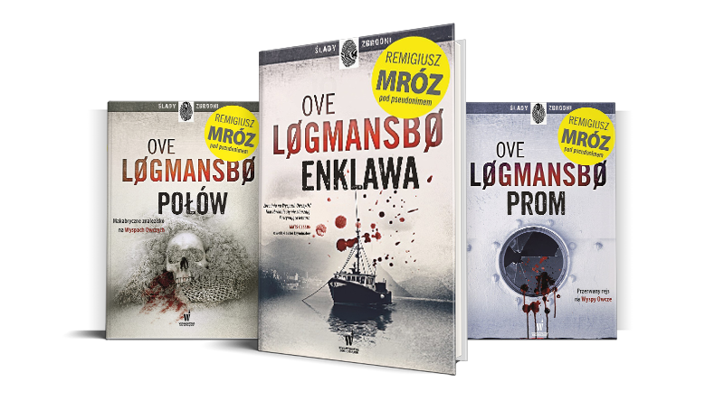

Seria jako Ove Logmansbo
Akcja rozgrywa się na Wyspach Owczych. Cała seria była pisana pod pseudonimem - to alter ego Remigiusza, pod który skrywał się blisko ponad rok. Miejsce akcji wynika z fascynajcji jaką pałał Mróz na temat Wysp Owczych. Sam pojechał do Danii, odkryć miejsca, o których chciał pisać. Seria opowiada o morderstwie i fatum, jakie spadło na spokojne miejsce w latach 80. Na jaw zaczynają wychodzi mroczne sekrety społeczności Vestmanny.
W TEJ SERII Zobacz inne książki!
